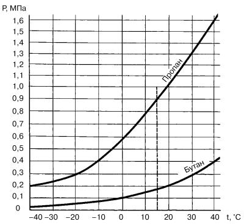
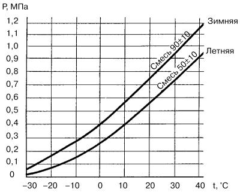

Основные свойства сжиженного нефтяного газа (СНГ).
Одним из наиболее важных свойств пропана и бутана, отличающих их от других видов автомобильного газового топлива, является наличие паровой фазы над зеркалом жидкой фазы. Это свойство позволяет поддерживать давление в баллоне. В процессе наполнения баллона первые порции сжиженного газа быстро испаряются и заполняют весь его объем.
В качестве примера рассмотрим рис. 1.

Рис. 1. Зависимость давления насыщенных паров пропана и бутана от температуры.
Давление насыщенного пара бутана составляет 0,1 МПа (1 кгс/см2) при 0 °C и 0,17 МПа (1,7 кгс/см2) при 15 °C, а давление насыщенного пара пропана при этой же температуре – соответственно 0,59 и 0,9 МПа. Это означает, что при изменении пропорции состава газа давление последнего изменяется.
С увеличением температуры растет давление, что приводит к значительному изменению объема газа, находящегося в жидком состоянии. Следовательно, если сжиженный газ полностью заполняет баллон и температура продолжает увеличиваться, то внутреннее давление, быстро увеличиваясь, приводит к разрушению баллона.
Поэтому никогда не заполняйте баллон жидкой фазой сжиженного газа полностью. Обязательно оставляйте паровую подушку, объем которой должен составлять 15–20 % от геометрической емкости баллона.
Облегчает выполнение этого требования, о чем будет сказано ниже, многофункциональный прибор – мультиклапан, входящий в состав измерительной и предохранительной арматуры и установленный на обечайке баллона. Это устройство строго следит за заполнением баллона сжиженным газом. Он обязательно сработает при заправке на АЗС и автоматически отключит подачу газа в баллон, когда объем заправляемого сжиженного газа достигнет 80–85 % от общей емкости баллона, и обеспечит пространство (незаполненный объем) для компенсации теплового расширения жидкой фазы за счет объема насыщенного пара, давление которого зависит от температуры окружающей среды.
В условиях холодного климата (или зимы) в газовом топливе (смеси пропана и бутана) должен преобладать пропан для лучшей испаряемости смеси. Пропан перестает переходить в газовую фазу и остается в жидком состоянии при температуре ниже –42 °C, для бутана эта температура равна –0,5 °C.
Изменение давления насыщенных паров P смеси пропана и бутана в зависимости от температуры в баллоне показано на рис. 2. Верхняя кривая на рисунке показывает процентное содержание пропана и бутана в общем объеме сжиженного газа, используемого в зимнее время года, нижняя – то же соотношение для летней поры.

Рис. 2. Зависимость давления насыщенных паров смеси пропана и бутана от температуры.
Поскольку в двигатель сжиженный газ поступает в газообразном состоянии, то по сравнению с бензином несколько уменьшается наполнение им цилиндров. Таким образом, при работе двигателя на газе его мощность немного снижается. Если мощность двигателя, работающего на бензине, принять за 100 %, то мощность двигателя, работающего на газе, будет примерно равна 93 %, что приводит к снижению максимальной скорости примерно на 4 %. Однако ранней установкой угла опережения зажигания до ВМТ на 3–5° этот недостаток частично устраняется. Большой разницы в условиях эксплуатации автомобиля, работающего на газе или на бензине, не ощущается.